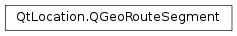

QGeoRouteSegment¶
Synopsis¶
Functions¶
- def
__eq__(other) - def
__ne__(other) - def
distance() - def
isValid() - def
maneuver() - def
nextRouteSegment() - def
path() - def
setDistance(distance) - def
setManeuver(maneuver) - def
setNextRouteSegment(routeSegment) - def
setPath(path) - def
setTravelTime(secs) - def
travelTime()
Detailed Description¶
The
PySide2.QtLocation.QGeoRouteSegmentclass represents a segment of a route.A
PySide2.QtLocation.QGeoRouteSegmentinstance has information about the physical layout of the route segment, the length of the route and estimated time required to traverse the route segment and an optionalPySide2.QtLocation.QGeoManeuverassociated with the end of the route segment.
PySide2.QtLocation.QGeoRouteSegmentinstances can be thought of as edges on a routing graph, withPySide2.QtLocation.QGeoManeuverinstances as optional labels attached to the vertices of the graph.
-
class
PySide2.QtLocation.QGeoRouteSegment¶ -
class
PySide2.QtLocation.QGeoRouteSegment(other) Parameters: other – PySide2.QtLocation.QGeoRouteSegmentConstructs an invalid route segment object.
The route segment will remain invalid until one of
PySide2.QtLocation.QGeoRouteSegment.setNextRouteSegment(),PySide2.QtLocation.QGeoRouteSegment.setTravelTime(),PySide2.QtLocation.QGeoRouteSegment.setDistance(),PySide2.QtLocation.QGeoRouteSegment.setPath()orPySide2.QtLocation.QGeoRouteSegment.setManeuver()is called.Constructs a route segment object from the contents of
other.
-
PySide2.QtLocation.QGeoRouteSegment.distance()¶ Return type: PySide2.QtCore.qrealReturns the distance covered by this segment of the route, in meters.
-
PySide2.QtLocation.QGeoRouteSegment.isValid()¶ Return type: PySide2.QtCore.boolReturns whether this route segment is valid or not.
If
PySide2.QtLocation.QGeoRouteSegment.nextRouteSegment()is called on the last route segment of a route, the returned value will be an invalid route segment.
-
PySide2.QtLocation.QGeoRouteSegment.maneuver()¶ Return type: PySide2.QtLocation.QGeoManeuverReturns the maneuver for this route segment.
Will return an invalid
PySide2.QtLocation.QGeoManeuverif no information has been attached to the endpoint of this route segment.
-
PySide2.QtLocation.QGeoRouteSegment.nextRouteSegment()¶ Return type: PySide2.QtLocation.QGeoRouteSegmentReturns the next route segment in the route.
Will return an invalid route segment if this is the last route segment in the route.
-
PySide2.QtLocation.QGeoRouteSegment.__ne__(other)¶ Parameters: other – PySide2.QtLocation.QGeoRouteSegmentReturn type: PySide2.QtCore.boolReturns whether this route segment and
otherare not equal.The value of
PySide2.QtLocation.QGeoRouteSegment.nextRouteSegment()is not considered in the comparison.
-
PySide2.QtLocation.QGeoRouteSegment.__eq__(other)¶ Parameters: other – PySide2.QtLocation.QGeoRouteSegmentReturn type: PySide2.QtCore.boolReturns whether this route segment and
otherare equal.The value of
PySide2.QtLocation.QGeoRouteSegment.nextRouteSegment()is not considered in the comparison.
-
PySide2.QtLocation.QGeoRouteSegment.path()¶ Return type: Returns the geometric shape of this route segment of the route.
The coordinates should be listed in the order in which they would be traversed by someone traveling along this segment of the route.
-
PySide2.QtLocation.QGeoRouteSegment.setDistance(distance)¶ Parameters: distance – PySide2.QtCore.qrealSets the distance covered by this segment of the route, in meters, to
distance.
-
PySide2.QtLocation.QGeoRouteSegment.setManeuver(maneuver)¶ Parameters: maneuver – PySide2.QtLocation.QGeoManeuverSets the maneuver for this route segment to
maneuver.
-
PySide2.QtLocation.QGeoRouteSegment.setNextRouteSegment(routeSegment)¶ Parameters: routeSegment – PySide2.QtLocation.QGeoRouteSegmentSets the next route segment in the route to
routeSegment.
-
PySide2.QtLocation.QGeoRouteSegment.setPath(path)¶ Parameters: path – Sets the geometric shape of this segment of the route to
path.The coordinates in
pathshould be listed in the order in which they would be traversed by someone traveling along this segment of the route.
-
PySide2.QtLocation.QGeoRouteSegment.setTravelTime(secs)¶ Parameters: secs – PySide2.QtCore.intSets the estimated amount of time it will take to traverse this segment of the route, in seconds, to
secs.
-
PySide2.QtLocation.QGeoRouteSegment.travelTime()¶ Return type: PySide2.QtCore.intReturns the estimated amount of time it will take to traverse this segment of the route, in seconds.
© 2018 The Qt Company Ltd. Documentation contributions included herein are the copyrights of their respective owners. The documentation provided herein is licensed under the terms of the GNU Free Documentation License version 1.3 as published by the Free Software Foundation. Qt and respective logos are trademarks of The Qt Company Ltd. in Finland and/or other countries worldwide. All other trademarks are property of their respective owners.